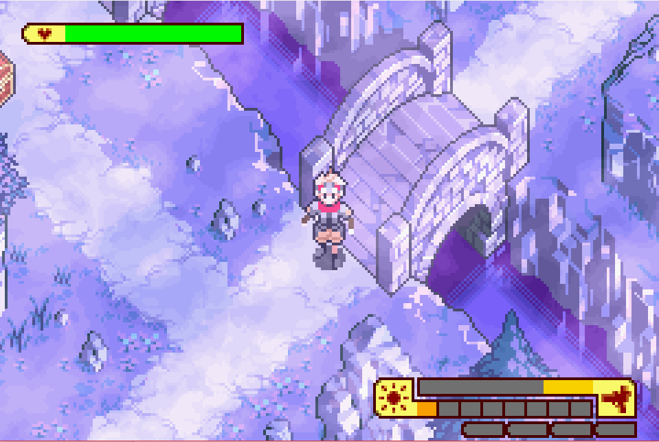
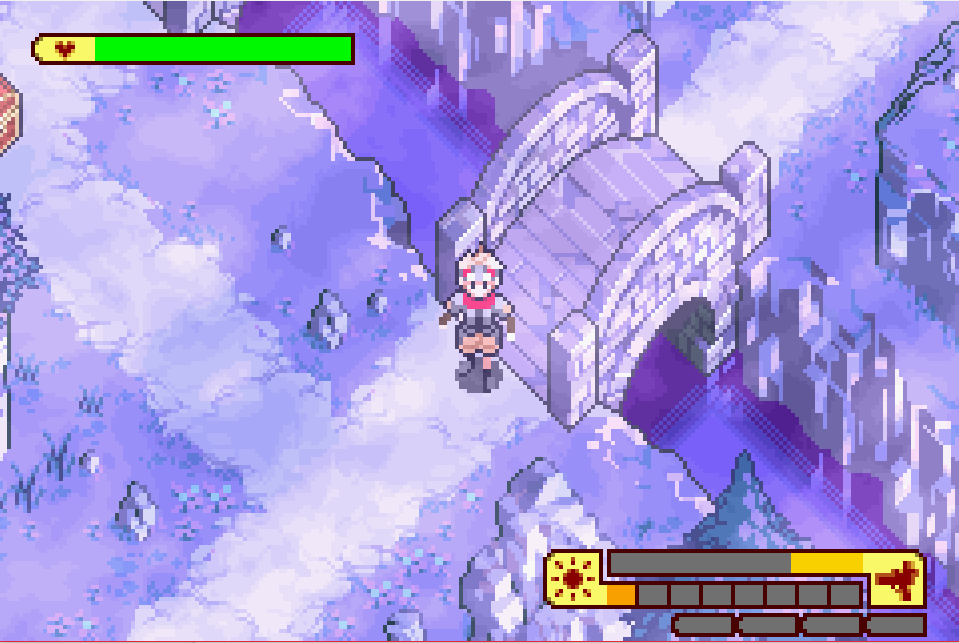

Complete on 2017-07-18
Complete on 2017-07-18
4 / 5
Release Date: Sep 16, 2003
Meta Score: 83
Complete on 2017-07-18
4 / 5
Release Date: Sep 16, 2003
Meta Score: 83
 


Boktai: The Sun Is In Your Hand is an action RPG about hunting vampires with a unique gimmick: the cartridge has a light sensor used to measure sunlight in the real world, which you use to hunt the undead in the game. Boktai is the first in a series. Boktai 2 is on the challenge list, Boktai 3 was only released in Japan, and there's a spiritual successor, Lunar Knights, on the DS.
The gimmick plays out simply enough: if the cartridge light sensor picks up sunlight, it will be sunny in-game. Undead caught outside will burn up, and inside dungeons there are skylights which will provide light inside. The main character Django's attacks use sunlight energy which he stores in batteries which can be recharged in the sun. There are other ways to manage sunlight energy like items that restore it, and a "solar bank" which fills up whenever light is on the sensor and can be withdrawn from later. Playing in strong sunlight for an extended period will cause the game to overheat your gun, which seems to be a way of preventing kids from getting sunburnt.
I actually own this game, and I remember as a child in England trying to play it was a pain as there was rarely enough sun to register on the game, and even then only a few bars out of a possible 10. For convenience now, I played on an emulator with a patch that allows you to set the sunlight level to whatever you want. This is less game breaking than you might think, as solar energy is only a limiting factor when you don't have any sun at all. If you have at least one bar of sun, you can recharge your batteries in the sun (albeit slowly), and opportunities to recharge are common enough that I didn't have any issues with energy even with an aggressive play style. I honestly think the game is more fun without having to worry about the sun sensor gimmick.
So with the gimmick mostly neutralised, what are we left with? An enjoyable if perhaps slightly easy action RPG somewhat reminiscent of The Legend of Zelda.
The story is light, mainly providing an excuse to go and hunt vampires. It's told through nice and short dialogs, usually just before and after the bosses. The rest of the time you're pretty free to roam. There is a companion character, Otenko, who's a kind of sunflower spirit guide. Sometimes he is a bit too heavy handed with puzzle hints, but it's usually not too obnoxious.
The combat is fun enough. Your main weapon, the "Gun del Sol" is modular and customisable. You can swap in lenses for different elemental effects and frames for different bullet/spread patterns. You also have grenades which produce various other effects. Lenses also level up and become stronger with use. The game has light stealth elements. You can sneak past enemies completely if you need to conserve sunlight energy (usually not a problem), and they take extra damage and stun if hit from behind. Sometimes you are made to kill all the enemies in a room without being seen, which usually isn't too tough. Bosses have a weakpoint in their attack cycle you can hit for massive damage, but you can also just shoot them to chip away at their health between cycles.
The game has quite a few puzzles. A lot of these are your standard pushing boxes and pressing switches puzzles. There are also puzzles that need you to lure enemies onto switches for you. There are some more imaginitive puzzles with unique mechanics though. In particular there are some where you need to change the sunlight level in order to change the game world. You might need to hide the sun so an enemy can walk past a skylight safely or let the sun in to activate an invisible platform. On the physical cart this would be done by putting your thumb over the sensor.
The game doesn't have a full-on Zelda style overworld. Instead the main dungeons are connected by branching paths populated with mini dungeons. Usually you get quite a lot of choice in which mini-dungeons to go through to get between the larger levels. You also get some choice in the order to take on the main levels. Exploring mini-dungeons is well rewarded with unique items like gun parts and health upgrades. This does mean you spend almost all your time dungeon crawling, as there aren't really many towns or other non-dungeon areas. There are no shops, only solar banks and loan sharks to get energy, and the solar tree where you can grow fruit (i.e. healing and other useful items) over time.
The larger dungeons have an interesting structure. After you fight through and beat the boss, you're not finished. The boss is only stunned and put in a coffin. Then you have to drag the coffin back out through the level to the outside, and use the power of the sun via the "Piledriver" to purify them permanently (basically play a short minigame). The coffin dragging section is not as tedious as it could have been if done badly. Your movement speed is reduced, but not too badly, and there are shortcuts/alternate paths unlocked, including some puzzles which require you to use the coffin to weigh down switches/etc.
I have a few small criticisms. The game can get a bit repetitive, with little variety in enemies (which are often reused with pallet swaps) and dungeon graphics, outside of the main dungeons. The lack of much side-questing other than just collecting upgrade items is also a little disappointing, and the lack of towns/npcs makes the world feel a bit lifeless. I think the solar sensor gimmick was ultimately just a gimmick and doesn't really add much to the game, and I think it's more fun with manual light control as I had with emulation. The maps can be a bit abstract and hard to line up with the levels, especially when multiple floors are involved. The game is perhaps a little short too, and doesn't fully explore some of its mechanics (notably the plant growing Earth lens which is just unceremoniously dropped on you and used a little, rather than getting a full themed dungeon).
These complaints were addressed somewhat in the sequels, ultimately leading to Lunar Knights on the DS which kept the game play and visual style but made the solar sensor completely optional with in-game weather determining sunlight levels.
Overall a solid game that I enjoyed a lot.